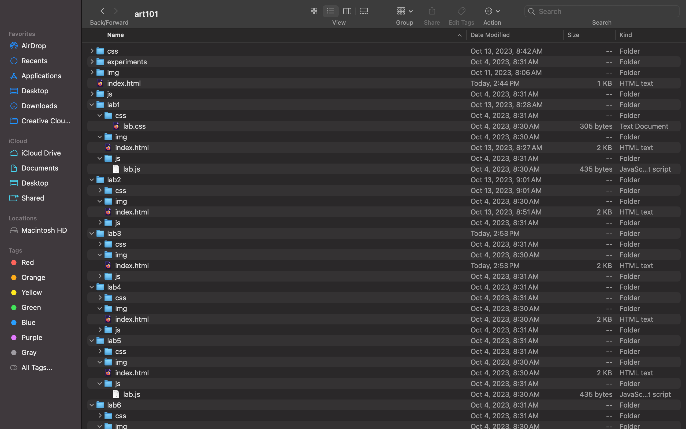
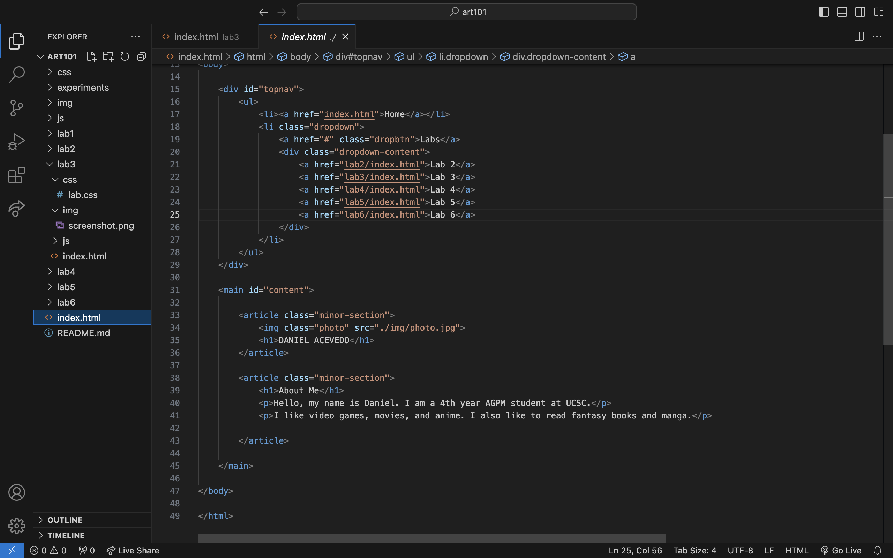
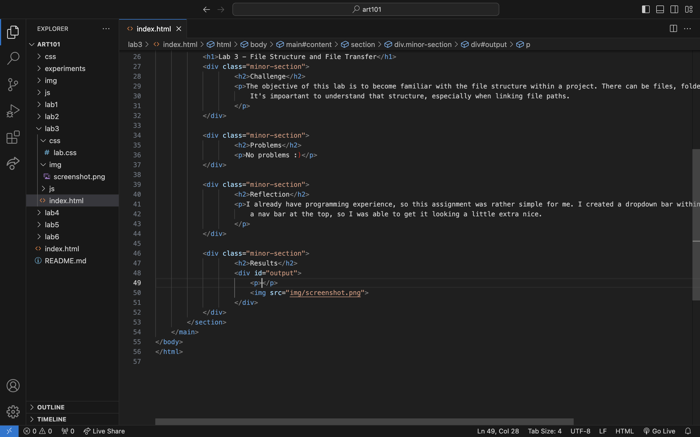

Lab 3 - File Structure and File Transfer
Challenge
The objective of this lab is to become familiar with the file structure within a project. There can be files, folders, folders within folders, etc. It's impoartant to understand that structure, especially when linking file paths.
Problems
No problems :)
Reflection
I already have programming experience, so this assignment was rather simple for me. I created a dropdown bar within a nav bar at the top, so I was able to get it looking a little extra nice.
Results
File Structure
art101/index.html code in VSCode
as appears in browser

lab3/index.html code in VSCode
lab3/index.html in browser